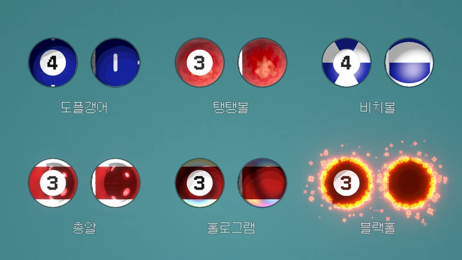
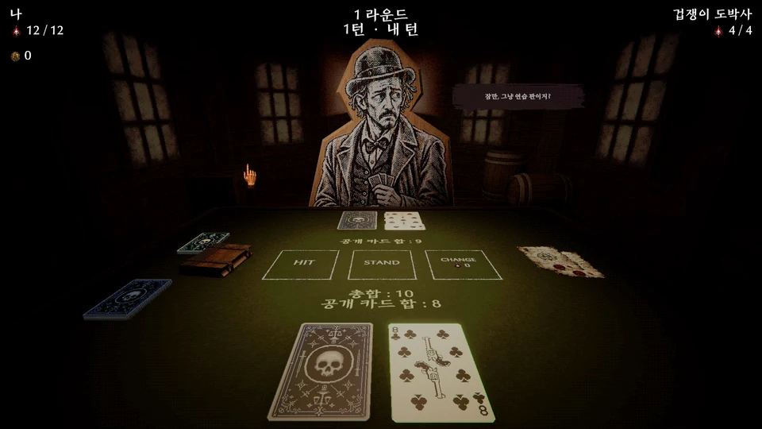
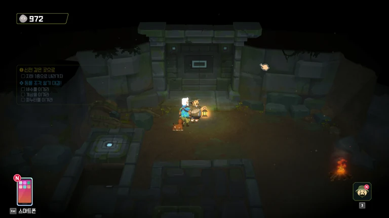
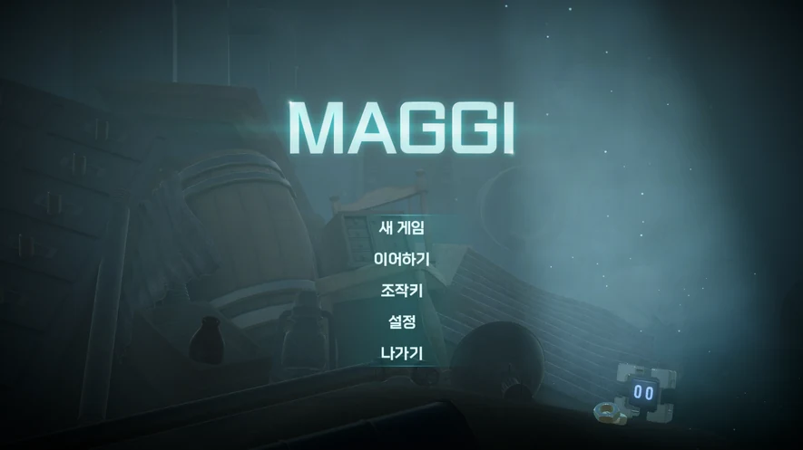

PROJECT 01 / 2025–2026 / 5인 팀 / TA
Break Shoot

담당 작업셰이더 · 포스트프로세싱 · 3D 에셋 · 애니메이션 · 이펙트
당구의 물리적 플레이에 로그라이크 성장 요소를 결합한 게임입니다. 공의 능력 표현과 UI 연출을 포함한 그래픽 작업을 담당했습니다.
연출 · 기능별 작업
02 / SHIM YOUNGHWAN
ART × CODE × REAL-TIME
셰이더 · 제작 도구 · 애니메이션
SELECTED PROJECTS
프로젝트 소개 → 연출·기능별 구현
PROJECT 01 / 2025–2026 / 5인 팀 / TA

담당 작업셰이더 · 포스트프로세싱 · 3D 에셋 · 애니메이션 · 이펙트
당구의 물리적 플레이에 로그라이크 성장 요소를 결합한 게임입니다. 공의 능력 표현과 UI 연출을 포함한 그래픽 작업을 담당했습니다.
연출 · 기능별 작업
PROJECT 02 / 2026.07 시작 / 3인 팀 / TA

담당 작업지도 · 전투 연출 · 셰이더 · 3D 에셋 · 도감 UI
블랙잭 기반 덱빌딩 로그라이크입니다. 지도와 전투의 시각적 연출, 에셋 제작 도구를 연결해 게임의 표현을 구현했습니다.
연출 · 기능별 작업
PROJECT 03 / 2025.08–12 / 민트로켓 / TA 인턴

담당 작업곤충 애니메이션 · 무드 R&D · 지형 마스킹 · 배경 에셋
인 더 정글 DLC에 TA 인턴으로 참여했습니다. 곤충 배틀 애니메이션과 지하 던전 그래픽, 상호작용 오브젝트를 작업했습니다.
연출 · 기능별 작업
PROJECT 04 / 2024–2025 / 팀 프로젝트 / 그래픽 구현

담당 작업셰이더 · 3D 에셋 · 텍스처링 · 리깅 · 애니메이션
자석 능력을 가진 주인공이 등장하는 3D 공포 어드벤처 퍼즐 게임입니다. 능력의 시각화, 캐릭터 표정과 기계팔 동작을 구현했습니다.
연출 · 기능별 작업
PERSONAL STUDIES
프로젝트 외에 진행한 기계 구조의 움직임과 프로시저럴 재질 실습입니다.
BEHIND THE WORK
심영환 / Shim YoungHwan
시각적인 표현을 구현하고, 반복되는 제작 과정을 도구로 연결하는 테크니컬 아티스트 심영환입니다.
GET IN TOUCH